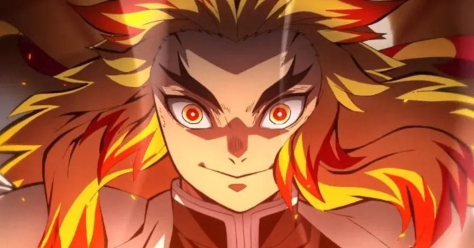
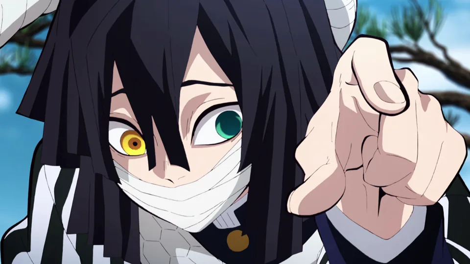

Vivo

Giyu Tomioka
Respiração da Água
Última localização: Monte Natagumo
Morto

Kyojuro Rengoku
Respiração do Fogo
Última localização: Trem Infinito
Morta

Shinobu Kocho
Respiração do Inseto
Última localização: Mansão Dimensional
Vivo

Tengen Uzui
Respiração do Som
Última localização: Distrito do Entretenimento
Vivo

Sanemi Shinazugawa
Respiração do Vento
Última localização: Castelo Infinity
Morto
Muichiro Tokito
Respiração da Névoa
Última localização: Castelo Infinity
Morta

Mitsuri Kanroji
Respiração do Amor
Última localização: Castelo Infinity
Morto

Obanai Iguro
Respiração da Serpente
Última localização: Castelo Infinity
Morto

Gyomei Himejima
Respiração da Pedra
Última localização: Castelo Infinity